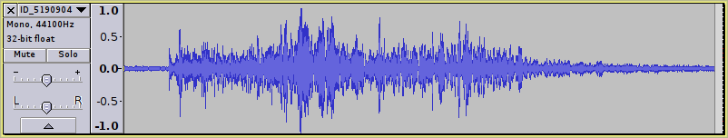
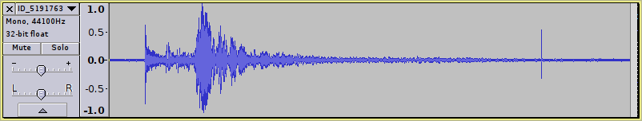
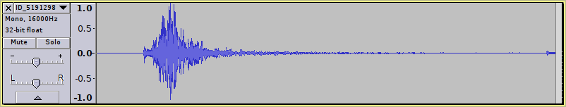
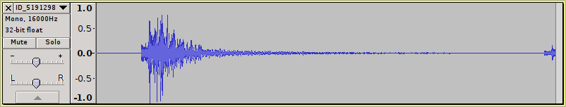

О проекте

Каждый год на нашей планете происходят миллионы землетрясений. Большинство из них могут быть зафиксированы только высокоточными приборами, но бывают и такие, которые приводят к разрушению целых городов. Более подробно о природе землетрясений можно почитать на википедии.
Для того, чтобы зафиксировать сейсмические колебания, которые возникают при землетрясениях, используются специальные приборы - сейсмографы.
До недавнего времени сейсмографы представляли из себя преимущественно механические или электромеханические приборы. Они записывали форму колебаний на бумаге, что создавало трудности при распространении полученных записей.
С приходом цифровой эры механические приборы стали постепенно заменяться на цифровые. В них аналоговый сигнал с сейсмического датчика оцифровывается при помощи АЦП а затем записывается в файл, который может быть прочитан с помощь специальных программ на обычном компьютере.
Сначала, как это обычно бывает, никаких стандартов ни на формат данных ни на протокол обмена ими не существовало, что создавало определенные трудности при использовании данных полученных разными коллективами ученых.
Со временем эти проблемы были решены и на свет появились такие стандарты де-факто, как miniseed для хранения архива волновых форм и FDSN Web Services, который позволяет получить из архива произвольные записи волновых форм, а так же как каталог событий. Фактически, теперь любой пользователь интернета может скачать эти данные себе на компьютер.
Целью данного проекта было предоставить возможность загрузки сейсмических записей на основе каталогов землетрясений а так же сохранение их в формате звуковых файлов.
Программа имеет командно строковой интерфейс, что позволяет автоматизировать данный процесс.
Возможности
- выбор FDSN Web Service из списка или задание вручную;
- вывод каталога событий с заданными критериями;
- вывод списка работающих станций в заданный интервал времени;
- загрузка произвольного куска сейсмических данных;
- загрузка сейсмических записей на основе каталога событий с заданными критериями;
Примеры полученных звуков
   {kind=link}
{kind=link}
{kind=link}
{kind=link}
Примеры использования программы
Вывести список событий за 2016 год с магнитудой больше либо равной 7.0:
seismicsound-dl --print-selected-events --event-start-time 2016-01-01T00:00:00 --event-end-time 2016-12-31T00:00:00 --event-min-mag 7.0
Результат:
INFO: Downloading the event list...
------------------------------------------------------------------------------------------------
List of Events
------------------------------------------------------------------------------------------------
ID | TYPE | MAG | LATITUDE | LONGITUDE | DEPTH | TIME | DESCRIPTION
------------------------------------------------------------------------------------------------
9948944 | Mww | 7.6 | -43.4053 | -73.9403 | 38.000 | 2016-12-25T14:22:27 | SOUTHERN CHILE
9946716 | mww | 7.9 | -4.5049 | 153.5216 | 94.540 | 2016-12-17T10:51:10 | NEW IRELAND REGION, P.N.G.
9912119 | mww | 7.8 | -10.6760 | 161.3298 | 41.000 | 2016-12-08T17:38:46 | SOLOMON ISLANDS
5198717 | mww | 7.0 | 11.9597 | -88.8355 | 10.340 | 2016-11-24T18:43:48 | OFF COAST OF CENTRAL AMERICA
5197722 | Mww | 7.8 | -42.7245 | 173.0647 | 22.000 | 2016-11-13T11:02:59 | SOUTH ISLAND, NEW ZEALAND
5192066 | mww | 7.1 | -37.4010 | 179.0548 | 19.000 | 2016-09-01T16:37:57 | OFF E. COAST OF N. ISLAND, N.Z.
5191763 | mww | 7.1 | -0.0471 | -17.8294 | 10.000 | 2016-08-29T04:29:57 | NORTH OF ASCENSION ISLAND
5190904 | mww | 7.4 | -55.2793 | -31.8740 | 10.000 | 2016-08-19T07:32:22 | SOUTH GEORGIA ISLAND REGION
5190300 | mww | 7.2 | -22.4778 | 173.1108 | 16.440 | 2016-08-12T01:26:36 | SOUTHEAST OF LOYALTY ISLANDS
5189231 | mww | 7.7 | 18.5439 | 145.5410 | 207.620 | 2016-07-29T21:18:26 | MARIANA ISLANDS
5183973 | mww | 7.2 | -56.2409 | -26.9353 | 78.000 | 2016-05-28T09:46:59 | SOUTH SANDWICH ISLANDS REGION
5181222 | mww | 7.0 | -16.0429 | 167.3786 | 24.000 | 2016-04-28T19:33:24 | VANUATU ISLANDS
5180176 | mww | 7.8 | 0.3819 | -79.9218 | 20.590 | 2016-04-16T23:58:36 | NEAR COAST OF ECUADOR
5180038 | mww | 7.0 | 32.7906 | 130.7543 | 10.000 | 2016-04-15T16:25:06 | KYUSHU, JAPAN
5176028 | mww | 7.8 | -4.9521 | 94.3299 | 24.000 | 2016-03-02T12:49:48 | SOUTHWEST OF SUMATRA, INDONESIA
5172800 | mww | 7.2 | 54.0057 | 158.5128 | 163.220 | 2016-01-30T03:25:10 | KAMCHATKA PENINSULA, RUSSIA
5172125 | mww | 7.1 | 59.6204 | -153.3392 | 125.600 | 2016-01-24T10:30:29 | SOUTHERN ALASKA
------------------------------------------------------------------------------------------------
Total: 17
Вывести список событий за август 2016 года с магнитудой больше либо равной 5 с эпицентром вблизи Италии:
seismicsound-dl --print-selected-events --event-start-time 2016-08-01T00:00:00 --event-end-time 2016-09-01T00:00:00 --event-min-mag 5.0 --event-min-lon 9 --event-max-lon 19 --event-min-lat 37 --event-max-lat 43
Результат:
INFO: Downloading the event list...
------------------------------------------------------------------------------------------------
List of Events
------------------------------------------------------------------------------------------------
ID | TYPE | MAG | LATITUDE | LONGITUDE | DEPTH | TIME | DESCRIPTION
------------------------------------------------------------------------------------------------
5191300 | mww | 5.6 | 42.8335 | 13.1319 | 4.950 | 2016-08-24T02:33:29 | CENTRAL ITALY
5191298 | mww | 6.2 | 42.7230 | 13.1877 | 4.440 | 2016-08-24T01:36:32 | CENTRAL ITALY
------------------------------------------------------------------------------------------------
Total: 2
Вывести список вертикальных каналов станций, которые установлены вблизи Италии и писали в момент, когда произошло событие с идентификатором "5191300":
seismicsound-dl --print-selected-traces --event-id 5191298 --station-min-lon 9 --station-max-lon 19 --station-min-lat 37 --station-max-lat 43 --channel *Z
Результат:
INFO: Downloading the station list...
--------------------------------------------------------------------------------------------------------------------------
List of Channels
--------------------------------------------------------------------------------------------------------------------------
NET | STA | LOC | CHAN | LATITUDE | LONGITUDE | ELEVAT | DEPTH | START TIME | END TIME | SITE NAME
--------------------------------------------------------------------------------------------------------------------------
GE | MATE | | BHZ | 40.6491 | 16.7044 | 0.494 | 0.000 | 2007-04-24T00:00:00 | 2599-12-31T23:59:59 | U Basilicata/GEOFON Station Matera, Italy
GE | MATE | | HHZ | 40.6491 | 16.7044 | 0.494 | 0.000 | 2007-04-24T00:00:00 | 2599-12-31T23:59:59 | U Basilicata/GEOFON Station Matera, Italy
...
YR | ED23 | | HHZ | 42.7433 | 13.2871 | 1.040 | 0.000 | 2016-08-30T00:00:00 | 2017-05-30T00:00:00 | SPELONGA
YR | ED24 | | HHZ | 42.6556 | 13.1922 | 1.103 | 0.000 | 2016-08-30T00:00:00 | 2017-05-30T00:00:00 | ROCCASALLI
YR | ED25 | | HHZ | 42.5988 | 13.3519 | 1.350 | 0.000 | 2016-08-30T00:00:00 | 2017-05-30T00:00:00 | CORNILLI NUOVO
--------------------------------------------------------------------------------------------------------------------------
Total: 382
Загрузить не более 10 записи события с идентификатором "5191300" с каналов "BHZ" с location "00" оборудования установленного вблизи Италии. Полученные аудиозаписи сохранить в текущий каталог с частотой дискретизации равной 16кГц:
seismicsound-dl --event-id 5191298 --station-min-lon 1 --station-max-lon 29 --station-min-lat 27 --station-max-lat 53 --channel BHZ --location 00 --limit 10 --sample-rate 16000
Результат:
$ ls -1
ID_5191298.G.CLF.00.BHZ.20160824013132.20160824023632.wav
ID_5191298.G.ECH.00.BHZ.20160824013132.20160824023632.wav
ID_5191298.G.SSB.00.BHZ.20160824013132.20160824023632.wav
ID_5191298.II.BFO.00.BHZ.20160824013132.20160824023632.wav
ID_5191298.II.IBFO.00.BHZ.20160824013132.20160824023632.wav
Для не более, чем 10 событий с магнитудой больше либо равной 7.0 загрузить по одной записи с каналов "HHZ" с location "00". Каждую запись удлинить до 14400 секунд:
seismicsound-dl --event-min-mag 7 --channel HHZ --location 00 --limit 10 --limit-per-event 1 --seconds-after 14400
Результат:
$ ls -1
ID_5190904.AG.CCAR.00.HHZ.20160819072724.20160819113224.wav
ID_5191763.AG.CCAR.00.HHZ.20160829042458.20160829082958.wav
ID_5192066.AG.CCAR.00.HHZ.20160901163259.20160901203759.wav
ID_5197722.AG.CCAR.00.HHZ.20161113105801.20161113150301.wav
ID_5198717.AG.CCAR.00.HHZ.20161124183848.20161124224348.wav
ID_9912119.AG.CCAR.00.HHZ.20161208173348.20161208213848.wav
ID_9946716.AG.CCAR.00.HHZ.20161217104612.20161217145112.wav
ID_9948944.AG.CCAR.00.HHZ.20161225141728.20161225182228.wav
ID_9953968.AG.CCAR.00.HHZ.20170110060849.20170110101349.wav
ID_9993759.AG.CCAR.00.HHZ.20170122042525.20170122083025.wav
Параметры запуска
Использование:
seismicsound-dl [OPTIONS]
Опции:
=============================================================================
опции, которые влияют на выходные аудио файлы
=============================================================================
--sample-rate
установить частоту оцифровки аудио файлов
(по умолчанию '44100')
--sample-format
установить формат отчетов аудио файлов
вы можете использовать следующие значения:
i16 -- 16 бит на отчет (целочисленное)
i24 -- 24 бит на отчет (целочисленное)
i32 -- 32 бит на отчет (целочисленное)
f32 -- 32 бит на отчет (IEEE774)
f64 -- 64 бит на отчет (IEEE774)
(по умолчанию 'i16')
--output-directory
установить выходной каталог для аудио файлов
(по умолчанию '.' (текущий каталог))
--filename-format
установить формат имени аудио файлов
вы можете использовать в формате следующие переменные:
%eid% -- идентификатор события
%net% -- код сети
%sta% -- код станции
%loc% -- код location
%chan% -- код канала
%starttime% -- время начала
(будет представлено как 'YYYYMMDDTHHMMSS')
%endtime% -- время окончания
(будет представлено как 'YYYYMMDDTHHMMSS')
(по умолчанию '%eid%.%net%.%sta%.%loc%.%cha%.%stm%.%etm%')
--filename-conflict-action
установить действия при дублировании имен файлов
вы можете использовать следующие значения:
suffix -- добавить к новому имени файла уникальный суффикс
overwrite -- перезаписать старый файл новым
skip -- не загружать дублирующиеся файлы
(по умолчанию 'suffix')
=============================================================================
опции, которые влияют на параметры выбора списка событий
=============================================================================
--event-id
установить идентификатор события
(если установлена эта опция, то все другие опции связанные
с формированием списка событий (--event-*) будут
проигнорированы. В результате будет список из одного события
с заданным идентификатором)
--event-start-time
установить время начала интервала, в котором произошло событие
(время должно иметь следующий формат: 'YYYY-MM-DDTHH:MM:SS')
--event-end-time
установить время конца интервала, в котором произошло событие
(время должно иметь следующий формат: 'YYYY-MM-DDTHH:MM:SS')
--event-min-mag
установить минимальную магнитуду землетрясения
(подробности смотрите в 'шкале магнитуд землетрясений' ниже)
--event-max-mag
установить максимальную магнитуду землетрясения
(подробности смотрите в 'шкале магнитуд землетрясений' ниже)
--event-min-depth
установить минимальную глубину землетрясения
(единицы измерения: километры)
--event-max-depth
установить максимальную глубину землетрясения
(единицы измерения: километры)
условия поиска BOX, несовместимы с условиями поиска RADIAL
--event-min-lat
установить минимальную широту
(единицы измерения: градусы; диапазон значений: [-90.0; 90.0])
--event-max-lat
установить максимальную широту
(единицы измерения: градусы; диапазон значений: [-90.0; 90.0])
--event-min-lon
установить минимальную долготу
(единицы измерения: градусы; диапазон значений: [-180.0; 180.0])
--event-max-lon
установить максимальную долготу
(единицы измерения: градусы; диапазон значений: [-180.0; 180.0])
условия поиска RADIAL, несовместимы с условиями поиска BOX
--event-lat
установить широту центральной точки
(единицы измерения: градусы; диапазон значений: [-90.0; 90.0])
--event-lon
установить долготу центральной точки
(единицы измерения: градусы; диапазон значений: [-180.0; 180.0])
--event-min-radius
установить минимальную дистанцию от географической точки
определенной как "центральная точка"
(единицы измерения: градусы; диапазон значений: [-180.0; 180.0])
--event-max-radius
установить максимальную дистанцию от географической точки
определенной как "центральная точка"
(единицы измерения: градусы; диапазон значений: [-180.0; 180.0])
=============================================================================
опции, которые влияют на параметры выбора списка трасс
=============================================================================
--network
установить код сети
(подробности смотрите в 'формат кода сети' ниже)
--station
установить код станции
(подробности смотрите в 'формат кода станции' ниже)
--location
установить код location
(подробности смотрите в 'формат кода location' ниже)
--channel
установить код канала
(подробности смотрите в 'формат кода канала' ниже)
--start-time
установить время начала трассы данных
(время должно иметь следующий формат: 'YYYY-MM-DDTHH:MM:SS')
--end-time
установить время окончания трассы данных
(время должно иметь следующий формат: 'YYYY-MM-DDTHH:MM:SS')
Примечание: если вы установили временной интервал
трассы данных, то все опции связанные с формированием
списка событий (--event-*) будут проигнорированы
условия поиска BOX, несовместимы с условиями поиска RADIAL
--station-min-lat
установить минимальную широту
(единицы измерения: градусы; диапазон значений: [-90.0; 90.0])
--station-max-lat
установить максимальную широту
(единицы измерения: градусы; диапазон значений: [-90.0; 90.0])
--station-min-lon
установить минимальную долготу
(единицы измерения: градусы; диапазон значений: [-180.0; 180.0])
--station-max-lon
установить максимальную долготу
(единицы измерения: градусы; диапазон значений: [-180.0; 180.0])
условия поиска RADIAL, несовместимы с условиями поиска BOX
--station-lat
установить широту центральной точки
(единицы измерения: градусы; диапазон значений: [-90.0; 90.0])
--station-lon
установить долготу центральной точки
(единицы измерения: градусы; диапазон значений: [-180.0; 180.0])
--station-min-radius
установить минимальную дистанцию от географической точки
определенной как "центральная точка"
(единицы измерения: градусы; диапазон значений: [-180.0; 180.0])
--station-max-radius
установить максимальную дистанцию от географической точки
определенной как "центральная точка"
(единицы измерения: градусы; диапазон значений: [-180.0; 180.0])
=============================================================================
другие опции
=============================================================================
--limit
установить лимит общего количества загружаемых аудио файлов
(по умолчанию неограниченно)
--limit-per-event
установить лимит количества загружаемых аудио файлов
для каждого события
(по умолчанию неограниченно)
--seconds-before
установить количество дополнительных секунд, которые будут
загружены до первой сейсмической фазы
(по умолчанию '300' секунд)
--seconds-after
установить количество секунд, которые будут загружены после
первой сейсмической фазы
(по умолчанию '3600' секунд)
--fdsnws-dataselect-url
установить URL fdsnws dataselect сервиса
вы можете так же использовать КОД, который может быть
найден в списке fdsnws dataselect сервисов
(смотрите --print-fdsnws-dataselect-services)
(по умолчанию используются первая запись из списка
fdsnws dataselect сервисов)
--fdsnws-station-url
установить URL fdsnws station сервиса
вы можете так же использовать КОД, который может быть
найден в списке fdsnws station сервисов
(смотрите --print-fdsnws-station-services)
(по умолчанию используются первая запись из списка
fdsnws station сервисов)
--fdsnws-event-url
установить URL fdsnws event сервиса
вы можете так же использовать КОД, который может быть
найден в списке fdsnws event сервисов
(смотрите --print-fdsnws-event-services)
(по умолчанию используются первая запись из списка
fdsnws event сервисов)
--print-fdsnws-dataselect-services
показать список известных fdsnws dataselect сервисов и выйти
--print-fdsnws-station-services
показать список известных fdsnws station сервисов и выйти
--print-fdsnws-event-services
показать список известных fdsnws event сервисов и выйти
--print-fdsnws-services
показать список известных fdsnws сервисов и выйти
--print-selected-events
показать список выбранных событий без загрузки аудио файлов
(будут использованы только те опции, которые влияют
на параметры выбора списка событий)
--print-selected-traces
показать список выбранных трасс без загрузки аудио файлов
(будут использованы только те опции, которые влияют
на параметры выбора списка трасс)
--selected-events-format
установить формат строки вывода информации о выбранных событиях
вы можете использовать в формате следующие переменные:
%eid% -- идентификатор события
%type% -- тип магнитуды
%val% -- значение магнитуды
%lat% -- широта
%lon% -- долгота
%depth% -- глубина
%time% -- время
(будет представлено как 'YYYY-MM-DDTHH:MM:SS')
%desc% -- event description
(по умолчанию ' %eid% | %type% | %val% | %lat% | %lon% | %depth% | %time% | %desc%')
--selected-traces-format
установить формат строки вывода информации о выбранных трассах
вы можете использовать в формате следующие переменные:
%net% -- код сети
%sta% -- код станции
%loc% -- код location
%chan% -- код канала
%lat% -- широта
%lon% -- долгота
%elevat% -- высота
%depth% -- глубина
%stime% -- время начала
(будет представлено как 'YYYY-MM-DDTHH:MM:SS')
%etime% -- время окончания
(будет представлено как 'YYYY-MM-DDTHH:MM:SS')
%site% -- имя места
(по умолчанию ' %net% | %sta% | %loc% | %chan% | %lat% | %lon% | %elevat% | %depth% | %stime% | %etime% | %site%')
--debug
показать отладочную информацию
--help
показать это сообщение и выйти
=============================================================================
краткое справочное руководство
=============================================================================
шкала магнитуд землетрясений:
- 2.5 или меньше -- как правило, не ощущается, но могут быть записаны
сейсмографами
(~900,000 в год)
- 2.5 .. 5.4 -- зачастую ощущаются, но вызывают лишь незначительные
повреждения
(~30,000 в год)
- 5.5 .. 6.0 -- небольшие повреждения зданий и сооружений
(~500 в год)
- 6.1 .. 6.9 -- могут вызывать значительные разрушения в густо населенных
районах
(~100 в год)
- 7.0 .. 7.9 -- сильные землетрясения, серьезные разрушения
(~20 в год)
- 8.0 или сильнее -- сильнейшие землетрясения, могут полностью разрушить
поселения вблизи эпицентра
(каждые 5 .. 10 лет)
формат кода сети:
- 2 символа: верхний регистр или цифры
формат кода станции:
- 5 символа: верхний регистр или цифры
формат кода location:
- 2 символа: верхний регистр или цифры
формат кода канала:
- 3 символа: верхний регистр или цифры
вы так же можете использовать специальные символы:
- '?' для любого одного символа (пример: 'EH?', 'E??R')
- '*' для любого количества любых символов (пример: 'EH*', 'AK*')
Новости
Версия 0.1.1
- исправлены некоторые ошибки
Версия 0.1.0pre
- первый публичный релиз
Скачать
Готовые сборки:
https://github.com/AlekseyDurachenko/seismicsound-dl/releases
Исходный код:
https://github.com/AlekseyDurachenko/seismicsound-dl
Баг-трекер:
https://github.com/AlekseyDurachenko/seismicsound-dl/issues
Лицензия GNU GPLv3+
This program is free software: you can redistribute it and/or modify it under the terms of the GNU General Public License as published by the Free Software Foundation, either version 3 of the License, or (at your option) any later version.
This package is distributed in the hope that it will be useful, but WITHOUT ANY WARRANTY; without even the implied warranty of MERCHANTABILITY or FITNESS FOR A PARTICULAR PURPOSE. See the GNU General Public License for more details.
You should have received a copy of the GNU General Public License along with this program. If not, see http://www.gnu.org/licenses/.
The complete text of the GNU General Public License version 3 can be found in `LICENSE.GPLv3+'.